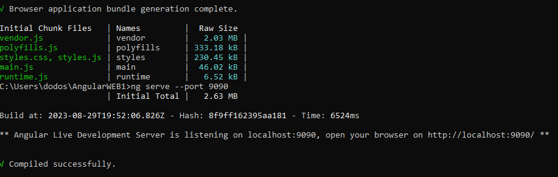

Sumario:
É um framework JavaScript de código aberto mantido pela Google para a construção de SPA (sigla para Single Page Applications ou Aplicações de Página Única). Resumidamente, uma SPA é basicamente uma aplicação web construída em uma só página, na qual a interação e a navegação entre as sessões de uma página ocorrem de maneira a qual não é necessário recarregar a página em cada uma dessas mudanças.
Sua finalidade é nos dar ferramentas necessárias para criação de aplicações SPA, além disso também deixa o desenvolvimento deste tipo de aplicação mais simples e otimizado. Com ele, podemos desenvolver aplicações web voltadas tanto para resoluções desktop quanto para resoluções mobile, tornando-as dinâmicas, modernas e escaláveis.
Com o Angular, temos um novo paradigma de desenvolvimento focado nos dados da aplicação. Ele não utiliza uma virtualização do DOM para manipulá-lo: ele utiliza mecanismos próprios de detecção de alterações na interface, alterações tas disparadas principalmente por uma estrutura chamada Two-Way Data Binding.
O Two-Way Data Binding mantém o model e a view sempre atualizados entre si, ou seja: sempre que algum model é atualizado, essa alteração se reflete automaticamente na view.
fonte:https://www.treinaweb.com.br/blog/o-que-e-o-angular-e-para-que-serve
O Angular 2.0 foi anunciado no ng-Europe conference 22-23 de setembro de 2014. As mudanças drásticas na versão 2.0 criou uma considerável controvérsia entre os desenvolvedores. Em 30 de abril de 2015, os desenvolvedores Angular anunciaram que o Angular 2 foi transformado de Alfa a Developer Preview. O Angular 2 mudou-se para o Beta em dezembro de 2015, e a primeira versão foi publicada em Maio de 2016. A versão final foi lançada em 14 de setembro de 2016.
Fonte:https://pt.wikipedia.org/wiki/Angular_(framework)
Em 13 de dezembro de 2016 Angular 4 foi anunciado, ignorando o 3 para evitar uma confusão devido ao desalinhamento da versão do pacote do roteador que já foi distribuído como v3.3.0. A versão final foi lançada em 23 de Março de 2017. O Angular 4 é compatível com o Angular 2.
O Angular versão 4.3 é uma versão menor, o que significa que ele contém alterações que não são de última hora e que é uma atualização pequena para 4.x.x.
Recursos da versão 4.3:
Angular 5 foi lançado em 1 de novembro de 2017. Os principais aprimoramentos Angular 5 incluem suporte para web apps progressivos, uma compilação otimizadora e melhorias relacionadas ao Material Design. Fonte:https://pt.wikipedia.org/wiki/Angular_(framework)
O lançamento da sexta versão do Angular ocorreu no dia quatro de Maio de 2018. Esta versão teve um foco menor na base do framework, e maior na cadeia de ferramentas e em como tornar mais fácil e rápida a migração com Angular nas atualizações futuras, como os comandos da CLI (Interface de Linha de Comando): ng update, ng add, Angular Elements, Componentes Angular Material + CDK, Componentes Iniciais Angular Material, CLI Workspaces, Suporte a biblioteca, Provedores de Árvore Shakable, Melhoramentos no desempenho de animações, e atualização do RxJS para a versão 6.
Fonte:https://pt.wikipedia.org/wiki/Angular_(framework)
A sétima versão do Angular foi lançada no dia dezoito de Outubro de 2018. Atualizações relacionadas ao desempenho de aplicativos, Angular Material & CDK, Rolagem Virtual, Melhor acessibilidade do elemento de formulário select (também conhecido por combobox ou dropdownlist), agora suporta Content Projection usando o padrão web para elementos personalizados, e atualizações de dependência em relação ao Typescript 3.1, RxJS 6.3, Node 10 (ainda suportando Node 8).
Fonte:https://pt.wikipedia.org/wiki/Angular_(framework)
O lançamento da mais nova versão do Angular ocorreu em maio de 2019 e conta com algumas melhorias no funcionamento dos formulários reativos, melhoria na sintaxe para declaração de rotas lazy-loading e a esperada disponibilização do compilador Ivy, que nesta versão ainda está em preview e precisa ser habilitado, mas não é recomendado que se utilize em produção.
Fonte:https://pt.wikipedia.org/wiki/Angular_(framework)
O Angular 9 foi lançado em 6 de fevereiro de 2020. A versão 9 move todos os aplicativos para usar o compilador Angular Ivy por padrão. O Angular foi atualizado para funcionar com TypeScript 3.6 e 3.7. Além de centenas de correções de bugs, o compilador e o tempo de execução Ivy oferecem inúmeras vantagens:
O Angular 10 foi lançado em 24 de junho de 2020.:
O Angular 11 foi lançado em 11 de novembro de 2020 e o Angular 12 foi lançado em 12 de maio de 2021.
Fonte:https://pt.wikipedia.org/wiki/Angular_(framework)
Desde a versão 9.0, a equipe do Angular mudou todos os novos aplicativos para usar o compilador e o tempo de execução Ivy. Eles trabalharão no Ivy para melhorar os tamanhos dos pacotes de saída e as velocidades de desenvolvimento.
Fonte:https://pt.wikipedia.org/wiki/Angular_(framework)
Para realizarmos a instalação do Angular, previamente devemos ter a plataforma Node.js®. Para realizar a instalação do Node.js, é necessario entrar no site da plataforma (Clique >aqui< para ser direcionado ao site)e iniciar o download da versão mais recente.
Ja com o Node.js instalado, devemos abrir o CMD do computador(abrindo o menu iniciar do Windows e digitando CMD) e digitar o comando "npm install -g @angular-cli", este comando ira iniciar a instalação das bibliotecas do Node que irão permitir a utilização do Angular CLI.
Apos a instalação, iremos verificar a instalação, para isso, abriremos novamente o CMD como administrador, no CMD, iremos fazer uso do seguinte codigo "ng -v"(podem ser usados algumas variações como "ng --version" ou "ng version"), pressionando enter apos digitar o codigo informado, devera aparecer uma tela semelhante a apresentada abaixo.

Fonte:https://www.devmedia.com.br/angular-cli-instalacao/38247
subirPara criarmos nosso primeiro projeto em Angular devemos utilizar o CMD e fazer o uso de uma linha de comando que ira gerar de forma automatica os arquivos necessarios para o funcionamento do Angular/Cli. A linha de codigos que iremos usar é a segruinte "ng new NOME-DO-PROJETO". Apos o termino da criação, poderemos encontrar a pasta criada no nosso disco "C:" o diretorio padrão para encontrar a pasta criada é "C:\Users\NOME-USUARIO\NOME-DO-PROJETO", podemos abrir essa pasta como um projeto em diversos IDEs, ou podemos prosseguir pelo CMD.

No CMD, vamos usar um codigo para entrarmos no diretorio da pasta do nosso projeto "cd NOME-DO-PROJETO", desta forma poderemos prosseguir, ja dentro do diretorio da pasta do nosso projeto podemos definir a porta onde ficara o server local HTTP que o Angular disponibiliza, por padrão a porta é 4200.
subirAgora que vamos executar nosso projeto, ainda como foi mostrado no topico anterior, dentro do diretorio do nosso projeto usaremos o seguinte codigo para iniciarmos o server HTTP, "ng serve", aparecerá no seu CMD da mesma forma como a imagem a seguir(meio diferente, pois eu alterei a porta do server).

Como apresentado na imagem, no CMD aparecerá o link que devemos utilizar para acessar a aplicação em execução, o link segue o seguinte padrão "http://localhost:4200/". Desta forma terminamos esta explicação.
subir